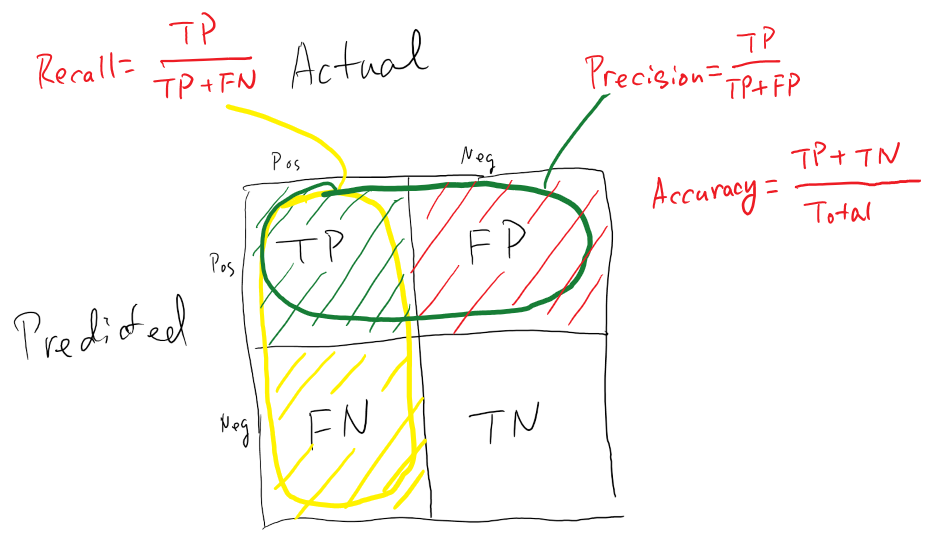
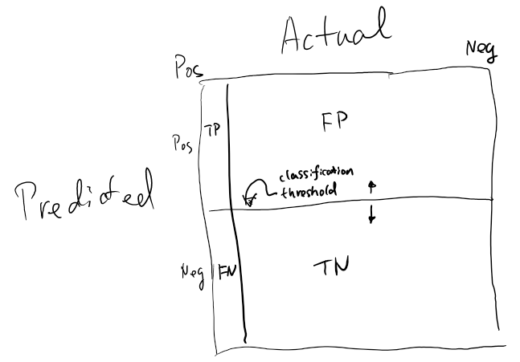
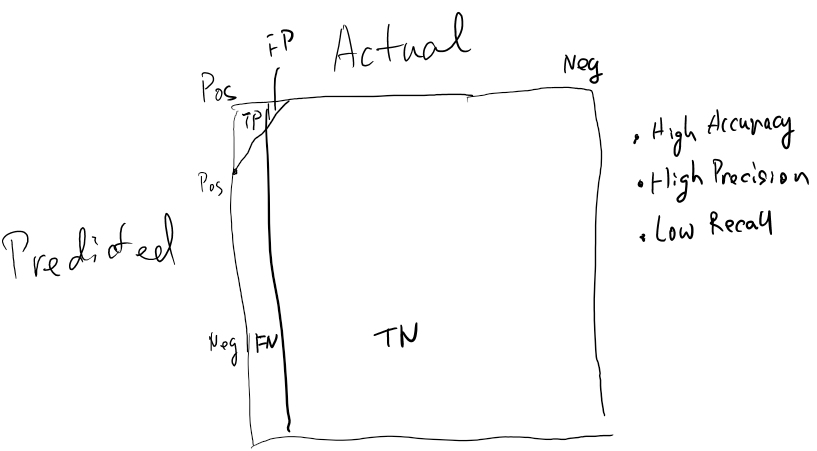

Visualizing Precision Recall
Andrew Ng's lecture on error analysis of Machine Learning gave a good explanation on Precision and Recall. Here I have a visualization of the concept.
Given the classification results on a test set, comparing the prediction result (P) and the actual label (L), each comparison can be categorized into four buckets:
- True positive (TP): P = L = 1
- False positive (FP): P = 1, L = 0
- False negative (FN): P = 0, L = 1
- True negative (TN): P = L = 0

Three metrics are often used:
Accuracy
Accuracy measures, among all test data, how many samples does the algorithm get correctly. This is defined as the number of correct classifications divided by the total test samples:
$$ Accuracy = \frac{TP + TN}{total} $$
Precision
Precision measures, among all samples that the algorithm claims to be positive ($TP + FP$), how many are correct:
$$ Precision = \frac{TP}{TP + FP} $$
Recall
Recall measures, among all sample that are actually positive ($TP + FN$), how many the algorithm classified as positive:
$$ Recall = \frac{TP}{TP + FN}
When the data has "skewed classes", precision is not a good performance metric. For example, this shows a skewed classes data:

We can have a cheating algorithm to predict everything as negative (imagine the horizontal threshold line to be moved way up), and the accuracy will be high (due to high TN). But as there are no positive classification, the recall is 0.
That's why precision and recall is a more balanced measurement for performance. An ideal algorithm should have high precision and recall values. But for a given algorithm, the precision and recall is traded off by setting the classification threshold higher or lower. For example, for the same data shown as above, we could choose a threshold so the algorithm only classifies positive when it's very confident:

This yields higher precision, but lower recall. If a single metric is desired out of precision and recall, there is F1 score defined as below:
$$ F_1 score = 2 \frac{precision \times recall}{precision + recall} $$
When either recall or precision is small, the score will be small. The perfect score is 1 when both precision and recall are 1.